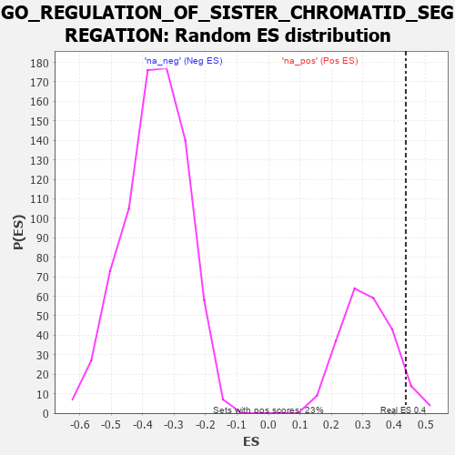

| | | Dataset | 7d |
| Phenotype | NoPhenotypeAvailable |
| Upregulated in class | na_pos |
| GeneSet | GO_REGULATION_OF_SISTER_CHROMATID_SEGREGATION |
| Enrichment Score (ES) | 0.4370376 |
| Normalized Enrichment Score (NES) | 1.3997241 |
| Nominal p-value | 0.069565214 |
| FDR q-value | 0.34644046 |
| FWER p-Value | 1.0 |
Table: GSEA Results Summary
 Fig 1: Enrichment plot: GO_REGULATION_OF_SISTER_CHROMATID_SEGREGATION
Fig 1: Enrichment plot: GO_REGULATION_OF_SISTER_CHROMATID_SEGREGATION
Profile of the Running ES Score & Positions of GeneSet Members on the Rank Ordered List
| PROBE | GENE SYMBOL | GENE_TITLE | RANK IN GENE LIST | RANK METRIC SCORE | RUNNING ES | CORE ENRICHMENT | | 1 | TEX14 | | | 164 | 1.179 | 0.0713 | Yes |
| 2 | BUB3 | | | 172 | 1.143 | 0.1596 | Yes |
| 3 | AXIN2 | | | 383 | 0.713 | 0.1887 | Yes |
| 4 | CDC20 | | | 480 | 0.644 | 0.2268 | Yes |
| 5 | CCNB1 | | | 581 | 0.601 | 0.2611 | Yes |
| 6 | NDC80 | | | 616 | 0.590 | 0.3029 | Yes |
| 7 | CDC6 | | | 709 | 0.557 | 0.3348 | Yes |
| 8 | RAD21 | | | 779 | 0.538 | 0.3680 | Yes |
| 9 | HDAC8 | | | 881 | 0.510 | 0.3951 | Yes |
| 10 | PSMG2 | | | 1018 | 0.480 | 0.4154 | Yes |
| 11 | CDC27 | | | 1585 | 0.377 | 0.3735 | Yes |
| 12 | ESPL1 | | | 1734 | 0.349 | 0.3821 | Yes |
| 13 | WAPL | | | 1758 | 0.344 | 0.4060 | Yes |
| 14 | CUL3 | | | 1893 | 0.321 | 0.4142 | Yes |
| 15 | ZW10 | | | 1973 | 0.309 | 0.4283 | Yes |
| 16 | CENPE | | | 2086 | 0.293 | 0.4370 | Yes |
| 17 | FEN1 | | | 2446 | 0.237 | 0.4103 | No |
| 18 | CDT1 | | | 2505 | 0.226 | 0.4206 | No |
| 19 | RIOK2 | | | 2775 | 0.187 | 0.4012 | No |
| 20 | BECN1 | | | 2828 | 0.179 | 0.4087 | No |
| 21 | LCMT1 | | | 3576 | 0.063 | 0.3195 | No |
| 22 | CDC16 | | | 3724 | 0.038 | 0.3040 | No |
| 23 | NIPBL | | | 3900 | 0.010 | 0.2827 | No |
| 24 | PCID2 | | | 4258 | -0.051 | 0.2417 | No |
| 25 | APC | | | 4558 | -0.107 | 0.2124 | No |
| 26 | ATRX | | | 4929 | -0.184 | 0.1802 | No |
| 27 | DDX11 | | | 5102 | -0.225 | 0.1760 | No |
| 28 | ATM | | | 5210 | -0.249 | 0.1820 | No |
| 29 | CDC23 | | | 5756 | -0.394 | 0.1441 | No |
| 30 | PLK1 | | | 6082 | -0.500 | 0.1422 | No |
| 31 | TNKS | | | 6138 | -0.516 | 0.1755 | No |
| 32 | TPR | | | 6597 | -0.709 | 0.1730 | No |
Table: GSEA details [plain text format]

Fig 2: GO_REGULATION_OF_SISTER_CHROMATID_SEGREGATION: Random ES distribution
Gene set null distribution of ES for GO_REGULATION_OF_SISTER_CHROMATID_SEGREGATION